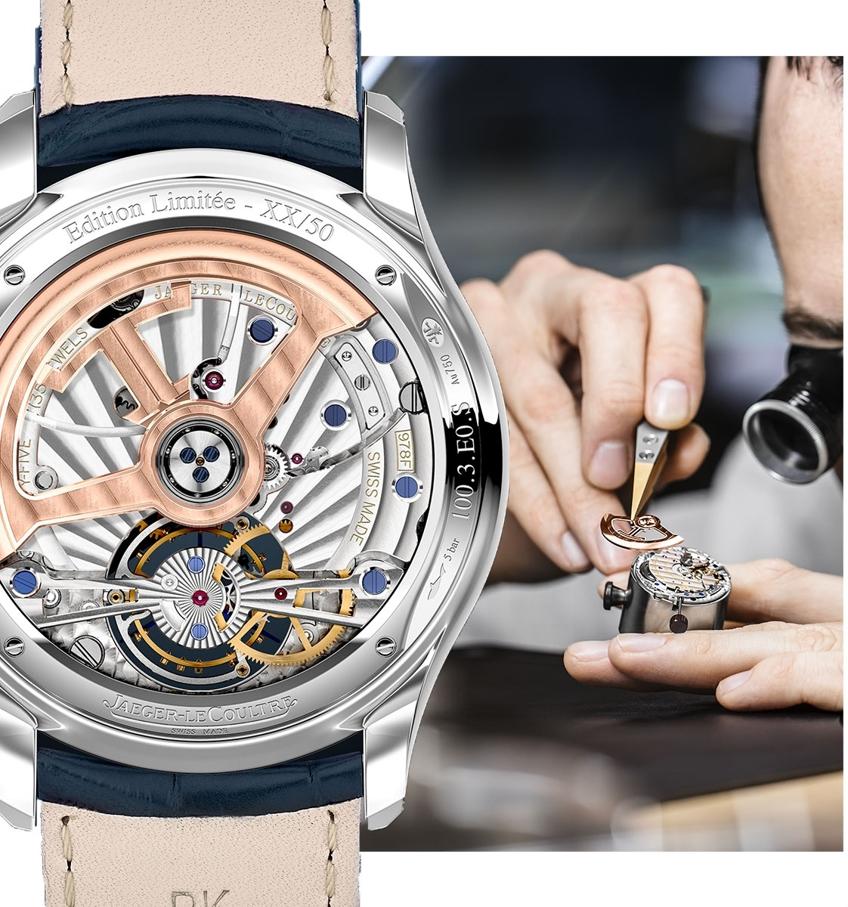
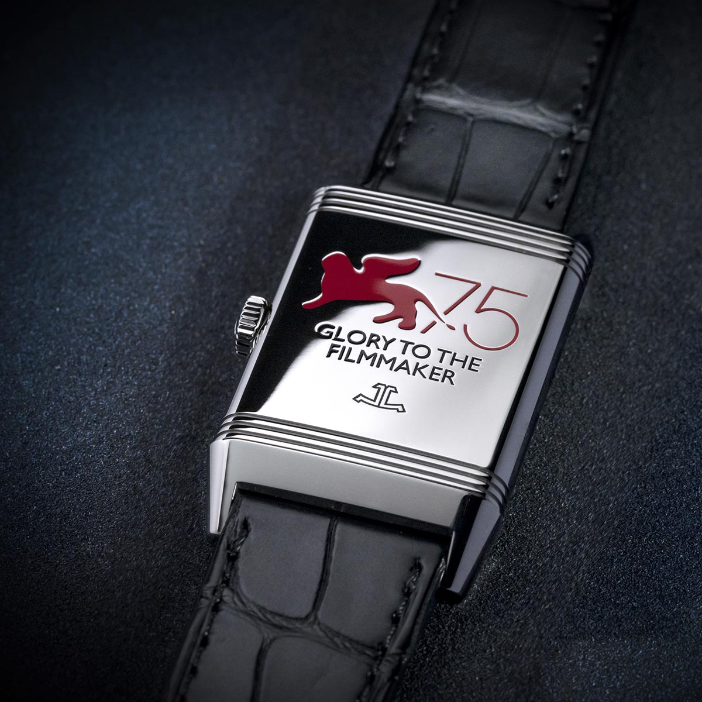
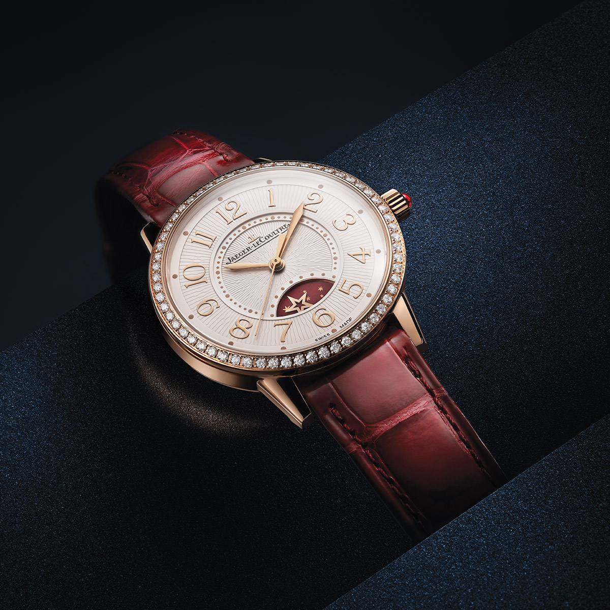
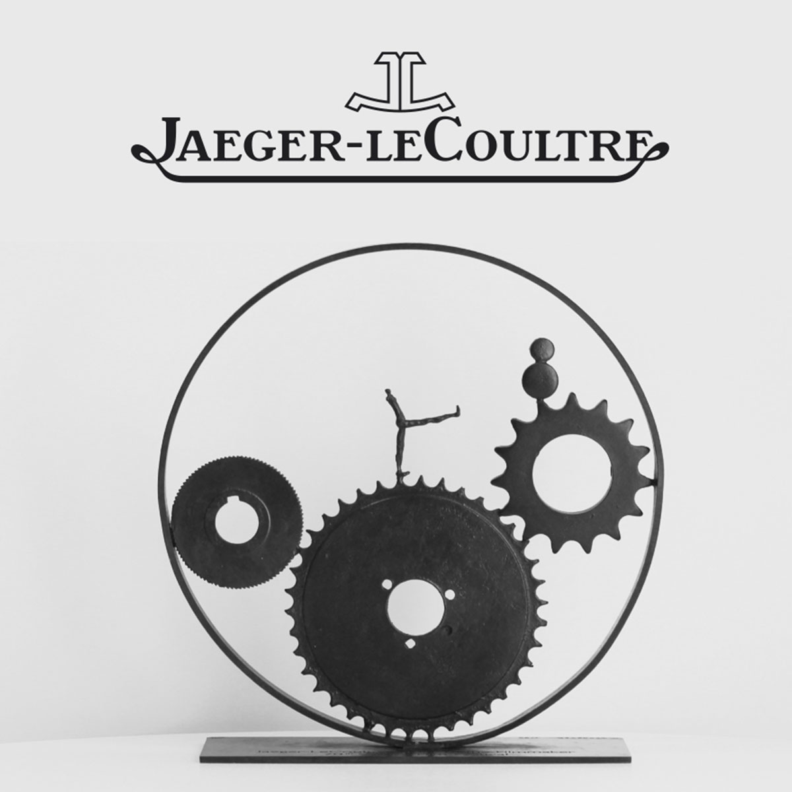

Our Latest News
브랜드 소식
Jaeger-leCoultre & Cinema
예거 르쿨트르와 영화제
Our Latest News
브랜드 소식
SIHH: 마스터 울트라 씬 퍼페추얼 에나멜
0 1 / 4 5
SIHH: 마스터 울트라 씬 퍼페추얼 에나멜
기존의 디자인에 새로움을 더한 퍼페추얼 캘린더(3시 방향에 요일, 9시 방향에 날짜, 12시 방향에 월과 년)는 남반구와 북반구에서 보이는 달을 동시에 보여줍니다. 섬세하게 폴리싱 처리된 별이 빛나는 밤하늘을 배경으로 문페이즈가 6시 방향의 디스크 안에 자리 잡고 있습니다. 인그레이빙 카운터를 포함한 새로운 디자인이 시선을 사로잡는 동시에 보름달, 상현달, 하현달의 모습을 시계 위에서 확인할 수 있습니다. ‘메티에 라르(Métiers Rares®)’ 수공예 기술이 고스란히 반영된 상징적인 컴플리케이션으로, 마스터 울트라 씬 퍼페추얼 에나멜은 시계 애호가들의 마음을 사로잡을 고급스러운 실루엣이 돋보입니다.
2019-01-14
1475
SIHH: 마스터 울트라 씬 투르비옹 에나멜
0 2 / 4 5

SIHH: 마스터 울트라 씬 투르비옹 에나멜
마스터 울트라 씬 컬렉션 특유의 우아한 케이스 속에 자리한 유서 깊은 예거 르쿨트르 칼리버 978 무브먼트는 기능과 미학적인 요소를 새롭게 재해석해 선보입니다. 선레이 패턴으로 마감한 칼리버 측면뿐만 아니라 가볍고 우아한 골드 로터가 탑재되어 보는 이들의 시선을 사로잡습니다. 6시 방향에 자리한 투르비옹이 끊임없이 회전하는 모습은 황홀한 볼거리를 제공합니다.
2019-01-14
1398
SIHH: 새로운 랑데부 나잇&데이 주얼리
0 3 / 4 5
SIHH: 새로운 랑데부 나잇&데이 주얼리
기술과 디자인의 정확성을 바탕으로 새롭게 재해석된 이 모델들은 하이 주얼리 코드를 계승함과 동시에 정교한 디테일에 특별한 관심을 기울였습니다. 정교한 프롱 세팅부터 새로운 문페이즈 디자인, 마더오브펄의 강렬한 존재감을 드러내는 다이얼에 예거 르쿨트르 898B 및 925A가 탑재되었습니다. 뛰어난 기술적 특성이 돋보이는 랑데부 컬렉션의 새로운 모델들은 워치메이킹의 정수를 보여줍니다. 각 피스가 선보이는 고도의 정밀한 기술력이 시계의 특별한 개성을 드러내며 매력을 더욱 극대화합니다.
2019-01-14
1835
SIHH: 새로운 마스터 그랑 트래디션 자이로투르비옹 웨스트민스터 퍼페추얼
0 4 / 4 5
SIHH: 새로운 마스터 그랑 트래디션 자이로투르비옹 웨스트민스터 퍼페추얼
2004년 마스터 자이로투르비옹 1, 2008년 리베르소 자이로투르비옹 2, 2013년 마스터 그랑 트래디션 자이로투르비옹 3 주빌리, 그리고 2016년 리베르소 트리뷰트 자이로투르비옹4 에 이어 다섯 번째 자이로투르비옹인 “마스터 그랑 트래디션 자이로투르비옹 웨스트민스터 퍼페추얼”을 공개합니다.
다축 투르비옹의 기술 발전에 기여한 마스터 그랑 트래디션 자이로투르비옹 웨스트민스터 퍼페추얼은 이전의 자이로투르비옹 타임피스에 비해 상당히 축소된 사이즈의 투르비옹을 선보입니다. 대체로 메커니즘의 사이즈를 줄이면 허용 오차가 줄어들기 때문에 대단히 정밀하고 복잡한 기술이 요구되며, 이러한 소형화 기술은 높이 평가되고 있습니다. 그랑 메종이 자랑스럽게 선보이는 하이 컴플리케이션 자이로투르비옹은 작은 사이즈의 투르비옹을 장착하여 착용감을 향상시켰으며, 일상의 즐거움을 선사합니다.
다축 투르비옹의 기술 발전에 기여한 마스터 그랑 트래디션 자이로투르비옹 웨스트민스터 퍼페추얼은 이전의 자이로투르비옹 타임피스에 비해 상당히 축소된 사이즈의 투르비옹을 선보입니다. 대체로 메커니즘의 사이즈를 줄이면 허용 오차가 줄어들기 때문에 대단히 정밀하고 복잡한 기술이 요구되며, 이러한 소형화 기술은 높이 평가되고 있습니다. 그랑 메종이 자랑스럽게 선보이는 하이 컴플리케이션 자이로투르비옹은 작은 사이즈의 투르비옹을 장착하여 착용감을 향상시켰으며, 일상의 즐거움을 선사합니다.
2019-01-13
1935
PRE-SIHH – 랑데부 문
0 5 / 4 5
PRE-SIHH – 랑데부 문
새롭게 선보이는 랑데부 문은 이전 모델과는 다른 매력을 드러냅니다. 참신한 디자인의 문페이즈가 그랑 메종의 메티에 라르®(Métiers Rares®) 노하우를 증명합니다. 6시 방향 디스크에 정교하게 폴리싱된 달은 경이로운 구름의 바다가 펼쳐진 별이 빛나는 래커 블루 밤하늘을 배경으로, 달의 다양한 위상을 드러냅니다. 보름달의 형태로 영롱한 광채를 발산하는 달은 정교한 원형 실루엣을 통해 랑데부 컬렉션의 주요 특징인 기하학적 형태를 떠올리게 합니다.
2019-01-07
2192
예거 르쿨트르가 선보이는 정교함의 예술
0 6 / 4 5
예거 르쿨트르가 선보이는 정교함의 예술
예거 르쿨트르에서 선보이는 워치메이커의 예술의 정수는 바로 정밀한 기법과 이를 수행하는 데 필요한 능숙한 장인정신의 완벽한 조화에 있습니다. 밀리오노미터에서 자이로투르비옹의 발명에 이르기까지, 매뉴팩쳐의 다양한 "메티에 라르(Métiers Rares®)" 수공예 예술과 마스터 워치메이커의 다방면에 걸친 전문성 속에서 정교한 기술과 미학적 노하우를 모두 달성하고자 하는 목표를 추구합니다.
2018-12-14
2083
Jaeger-leCoultre & Cinema
예거 르쿨트르와 영화제
영화제 후원
예거 르쿨트르와 영화 제작사 세븐스 아트(7th Art) 는 오랜 전통과 탁월함에 대한 완벽한 추구에서 영감을 받는 창의적인 세계라는 가치를 공유합니다. 예거 르쿨트르는 지속적으로 창작 활동에 힘쓰는 모든 사람과 영화 제작에 생명을 불어넣는 이들을 지원하며 자사의 전통을 보존하는 데 역점을 두고 있습니다.
예거 르쿨트르는 10년이 넘는 기간 동안 베니스국제영화제, 상하이국제영화제 등 세계에서 가장 저명한 예술 영화제와 긴밀한 관계를 맺고 있습니다. 또한, 매년 글로리 투 더 필름메이커 어워드(Glory to the Filmmaker Award)를 수여해 창의적인 영화 제작자들의 공로를 기리고 있습니다. 2018년 1월, 예거 르쿨트르는 베네딕트 컴버배치를 새로운 글로벌 브랜드 홍보대사로 위촉했습니다.
#JLCandCinema
예거 르쿨트르는 10년이 넘는 기간 동안 베니스국제영화제, 상하이국제영화제 등 세계에서 가장 저명한 예술 영화제와 긴밀한 관계를 맺고 있습니다. 또한, 매년 글로리 투 더 필름메이커 어워드(Glory to the Filmmaker Award)를 수여해 창의적인 영화 제작자들의 공로를 기리고 있습니다. 2018년 1월, 예거 르쿨트르는 베네딕트 컴버배치를 새로운 글로벌 브랜드 홍보대사로 위촉했습니다.
#JLCandCinema
베니스국제영화제
베니스국제영화제는 1895년 창설된 베니스 비엔날레 프로그램의 일환으로 시작해 현재 세계에서 가장 유명한 문화 행사 중 하나로 발전했습니다. 비엔날레는 새로운 현대 예술의 동향을 연구하고 홍보하는 데 선구자 역할을 하며, 예술(1895), 건축(1980), 영화(1932), 춤(1999), 음악(1930), 연극(1934) 등의 분야에서 연구와 전시회를 진행하고 있습니다.
베니스국제영화제는 1932년에 창설된 세계에서 가장 유서 깊은 영화제로, 전 세계에서 가장 명성 있는 영화 행사 중 하나입니다.
예거 르쿨트르는 해마다 황금사자상(최우수작품상) 수상자와 여우주연상 및 남우주연상 수상자에게 고유의 인그레이빙이 새겨진 리베르소 시계를 부상으로 수여합니다. 베니스국제영화제를 위해 특별하게 제작된 예거 르쿨트르 리베르소는 수상자들이 정서적 유대감을 가지고 오래도록 기억할 수 있는 기념품입니다.
베니스국제영화제는 1932년에 창설된 세계에서 가장 유서 깊은 영화제로, 전 세계에서 가장 명성 있는 영화 행사 중 하나입니다.
예거 르쿨트르는 해마다 황금사자상(최우수작품상) 수상자와 여우주연상 및 남우주연상 수상자에게 고유의 인그레이빙이 새겨진 리베르소 시계를 부상으로 수여합니다. 베니스국제영화제를 위해 특별하게 제작된 예거 르쿨트르 리베르소는 수상자들이 정서적 유대감을 가지고 오래도록 기억할 수 있는 기념품입니다.


상하이국제영화제
1896년 여름, 영화는 대양을 건너 상하이에 도착하며 중국과 영화의 만남이 최초로 성사됐습니다. 그 후 중국 내 영화의 입지는 계속 커졌고, 상하이는 중국과 외국의 영화 제작자들이 모여드는 도시로 발전했습니다. 그리고 이전 세대 영화 제작자들의 노력 덕분에 1993년 상하이국제영화제(SIFF)가 공식적으로 창설되었습니다.
상하이국제영화제는 영화 산업의 발전과 세계와의 협력을 위한 국제적인 발판을 구축하는 데 힘쓰고 있습니다.
상하이국제영화제의 경쟁 부문에는 골든 고블릿 어워드와 아시안 뉴 탤런트 어워드가 있습니다. 가장 영예로운 상은 최우수 장편 영화에 수여되는 골든 고블릿 어워드입니다.
예거 르쿨트르는 2011년부터 상하이국제영화제의 공식 파트너로 활동하며 연례 자선 경매 갈라를 주최해 중국의 영화 복원 사업을 지원하고 있습니다.
상하이국제영화제는 영화 산업의 발전과 세계와의 협력을 위한 국제적인 발판을 구축하는 데 힘쓰고 있습니다.
상하이국제영화제의 경쟁 부문에는 골든 고블릿 어워드와 아시안 뉴 탤런트 어워드가 있습니다. 가장 영예로운 상은 최우수 장편 영화에 수여되는 골든 고블릿 어워드입니다.
예거 르쿨트르는 2011년부터 상하이국제영화제의 공식 파트너로 활동하며 연례 자선 경매 갈라를 주최해 중국의 영화 복원 사업을 지원하고 있습니다.
영화 제작에 대한 경의
예거 르쿨트르는 재능 있고 창의적인 영화 제작자들의 공로를 기리며 베니스국제영화제와 함께 ‘현대 영화 제작 발전에 큰 공헌을 한’ 예술가에게 글로리 투 더 필름메이커 어워드를 수상하고 있습니다.
베니스국제영화제에서 이 위대한 상을 수상한 유명한 영화제작자에는 기타노 다케시(2007), 압바스 키아로스타미(2008), 아그네스 바르다(2008), 실베스터 스탤론(2009), 마니 라트남(2010), 알 파치노(2011), 스파이크 리(2012), 에토레 스콜라(2013), 제임스 프랭코(2014), 브라이언 드 팔마(2015), 아미르 나데리(2016), 스티븐 프리어즈(2017) 등이 있습니다.
2018년, 중국 영화 산업 발전을 지원하고 중국 영화 예술에 획기적인 발전을 가져온 선구적인 영화 제작자를 기리기 위해 상하이국제영화제에서도 예거 르쿨트르의 글로리 투 더 필름메이커 어워드를 수상하기 시작했습니다. 이 상은 영화 제작 분야의 탁월한 업적을 기념하는 동시에 시간은 계속 흘러가지만 진정한 클래식은 빛이 바래지 않는다는 예거 르쿨트르의 가치와 비전을 상징합니다. 그리고 이러한 클래식을 만드는 것은 바로 창의성입니다.
베니스국제영화제에서 이 위대한 상을 수상한 유명한 영화제작자에는 기타노 다케시(2007), 압바스 키아로스타미(2008), 아그네스 바르다(2008), 실베스터 스탤론(2009), 마니 라트남(2010), 알 파치노(2011), 스파이크 리(2012), 에토레 스콜라(2013), 제임스 프랭코(2014), 브라이언 드 팔마(2015), 아미르 나데리(2016), 스티븐 프리어즈(2017) 등이 있습니다.
2018년, 중국 영화 산업 발전을 지원하고 중국 영화 예술에 획기적인 발전을 가져온 선구적인 영화 제작자를 기리기 위해 상하이국제영화제에서도 예거 르쿨트르의 글로리 투 더 필름메이커 어워드를 수상하기 시작했습니다. 이 상은 영화 제작 분야의 탁월한 업적을 기념하는 동시에 시간은 계속 흘러가지만 진정한 클래식은 빛이 바래지 않는다는 예거 르쿨트르의 가치와 비전을 상징합니다. 그리고 이러한 클래식을 만드는 것은 바로 창의성입니다.

영화계의 유산 보존
예거 르쿨트르는 오랫동안 영화에 대한 이해와 보존을 지원하고 있습니다.
중국 고전 영화 복원 계획은 예거 르쿨트르와 상하이국제영화제가 협력하고 있는 중요한 프로젝트입니다. 지난 몇 년간 4K 기술을 이용해 다양한 중국 고전을 성공적으로 복원해 보존하고 있으며 이것은 오랜 전통과 뿌리 깊은 중국의 영화 문화를 증진하려는 예거 르쿨트르의 노력 덕분입니다.
현재까지 복원에 성공한 영화에는 The River Flows to the East(1~2편), Eight Thousand Li of Cloud and Moon, Crossroads, Crow and Sparrow, Two for the Road, Two Stage Sisters, C’est la Vie, Mon Chéri, A Better Tomorrow and Painting Soul 등이 있습니다.
예거 르쿨트르는 중국 문화유산 보호 및 전수의 중요성과 중국 고전 영화 보존을 위한 예거 르쿨트르의 기여도를 대중에게 알리고자 합니다. 이 프로젝트 지원과 영화 복원에 대한 의식 제고를 위해 예거 르쿨트르는 매년 상하이국제영화제에서 자선 경매 행사를 주최해 예거 르쿨트르 시계로 거둬들인 수익금 전액을 중국 영화 산업의 복원 프로젝트에 기부하고 있습니다.
중국 고전 영화 복원 계획은 예거 르쿨트르와 상하이국제영화제가 협력하고 있는 중요한 프로젝트입니다. 지난 몇 년간 4K 기술을 이용해 다양한 중국 고전을 성공적으로 복원해 보존하고 있으며 이것은 오랜 전통과 뿌리 깊은 중국의 영화 문화를 증진하려는 예거 르쿨트르의 노력 덕분입니다.
현재까지 복원에 성공한 영화에는 The River Flows to the East(1~2편), Eight Thousand Li of Cloud and Moon, Crossroads, Crow and Sparrow, Two for the Road, Two Stage Sisters, C’est la Vie, Mon Chéri, A Better Tomorrow and Painting Soul 등이 있습니다.
예거 르쿨트르는 중국 문화유산 보호 및 전수의 중요성과 중국 고전 영화 보존을 위한 예거 르쿨트르의 기여도를 대중에게 알리고자 합니다. 이 프로젝트 지원과 영화 복원에 대한 의식 제고를 위해 예거 르쿨트르는 매년 상하이국제영화제에서 자선 경매 행사를 주최해 예거 르쿨트르 시계로 거둬들인 수익금 전액을 중국 영화 산업의 복원 프로젝트에 기부하고 있습니다.